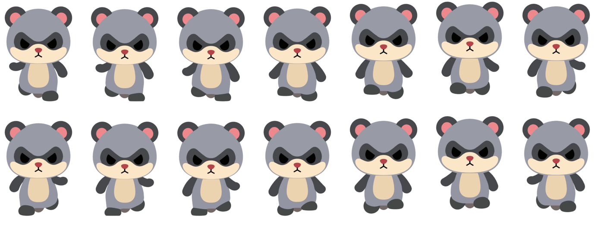
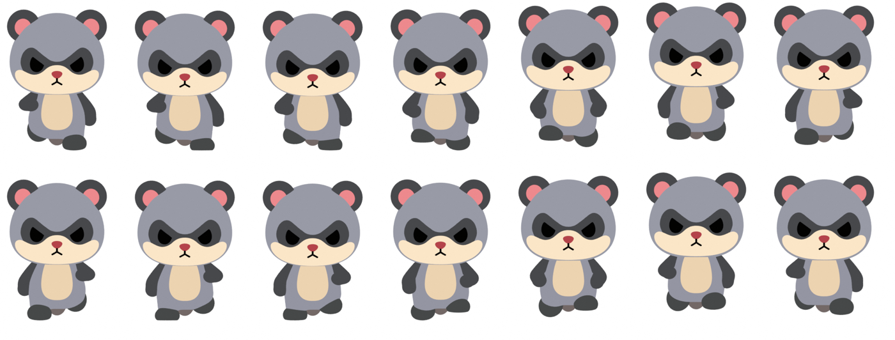
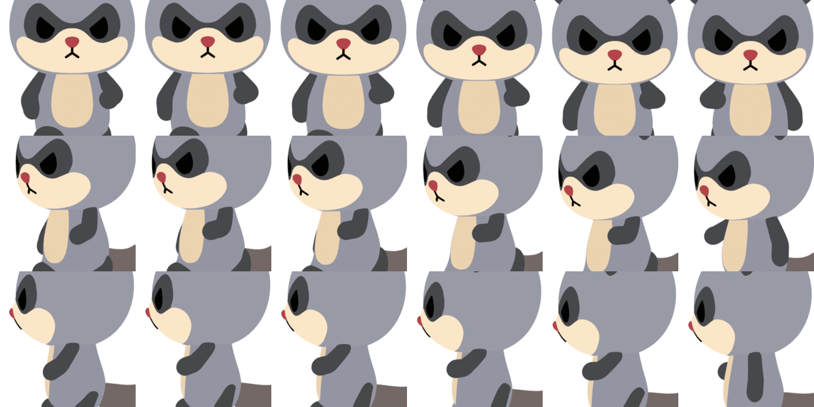
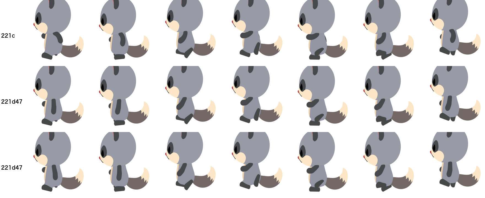

2. 正面の1周期（上：今の腕 D、下：新 221d42）


参考：正面から見た元動画（肘を曲げて胸の高さで振る指示の版）

1/4 速度：


参考：正面から見た元動画（肘を曲げて胸の高さで振る指示の版）

腕の付け根は、もともと頭の下端に接するデザインです。前に振っても、頬を突き抜けて見える所はありません。

気に入った場合は「確定」とお伝えください。221d42 を走り 1.1.0 として登録します。